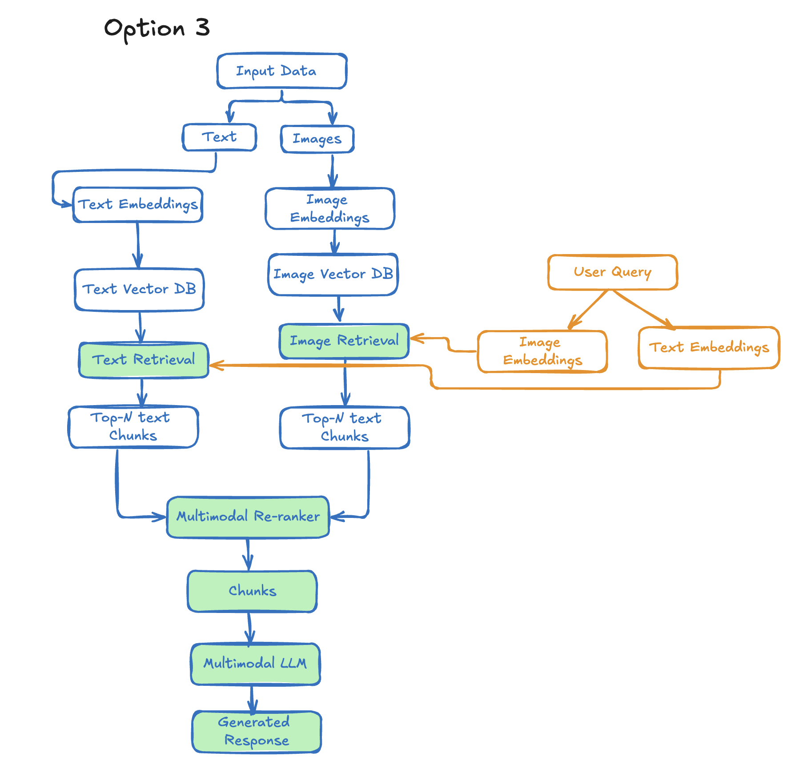
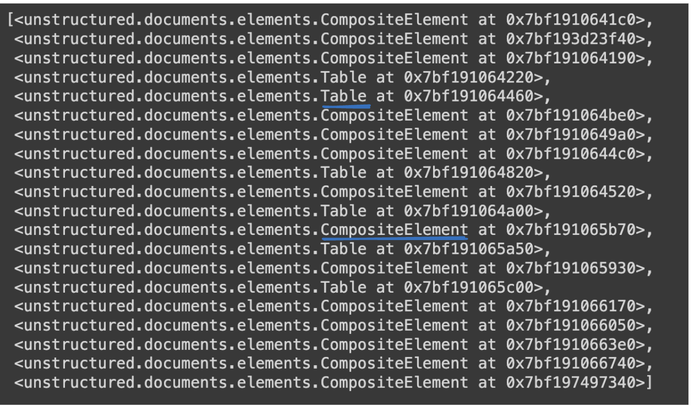

Multimodal RAG
In the previous section, we explored RAG systems primarily designed for handling text. However, in real-world scenarios, many documents within organizations contain valuable information in the form of images, tables, and other non-text elements. When building a robust RAG system, it's crucial to have the capability to retrieve not just text-based information but also relevant images and other visual data. This multimodal approach significantly enhances the effectiveness of information retrieval. In this section, we will explore methods to retrieve both images and text in response to user queries, enabling a more comprehensive and efficient RAG based system.
Three Different approaches for Multimodal RAG
Embedding for images can be done via CLIP model.
We will be using OpTion 2 for our lab

Contrastive Language-Image Pretraining - CLIP Model
Unlike other embedding models that focus on single modality (either text or images) the CLIP (Contrastive Language-Image Pretraining), was developed by OpenAI in 2021.
Note: CLIP models are embedding models, not traditional Large Language Models (LLMs).
The primary function of CLIP (Contrastive Language-Image Pretraining) is to create a shared embedding space where both text and images are represented as vectors. The key idea is to learn representations where images and their corresponding text descriptions are close to each other in this embedding space, while unrelated image-text pairs are far apart. This allows CLIP to perform tasks like image classification, zero-shot learning, and text-to-image retrieval based on the semantic similarity between text and images. So in summary CLIP models create a relationship between images and text.
Zero-Shot Learning (ZSL)
Zero-Shot Learning (ZSL): This technique enhances the ability of AI systems to classify and recognize objects they have not been explicitly trained on. Instead of relying solely on trained data, ZSL uses auxiliary information to make predictions. For example, in an image classification scenario where a model is trained to recognize dogs and cats, if it encounters an image of a zebra (which the model has never seen before), it can still classify it correctly if it has auxiliary information describing a zebra as an animal with black and white stripes.
Using ZSL, CLIP models can perform tasks they were not specifically trained on, in real-time. Essentially, they have capabilities similar to text-based embedding models. Just as we create chunks of text and use a user query to find similar text chunks, the same concept applies to images using CLIP.
OpenCLIP Model
It's important to note that the original CLIP model by OpenAI is not publicly available. However, people have taken the concepts from OpenAI's CLIP paper and developed open-source models like OpenCLIP.
Note: OpenCLIP is an open-source implementation and extension of the original CLIP (Contrastive Language-Image Pretraining) model developed by OpenAI.
Lets contine and jump to our lab
Deploy Multimodal RAG
Whenever we develop applications based on Large Language Models (LLMs), handling data is a crucial aspect. As discussed in the previous section (RAG), data injection is the initial step in this process. It's important to note that there are typically three types of data structure.
Task 1: Log into the Lab Environment
- Open Google Colab and create a new notebook. Click on "File" > "New notebook". Please refer to the following section to create Google Colab account.

- Change Runtime Environment: Click the “Runtime” dropdown menu at the top of the Colab interface.

-
Select “Change runtime type”: This will open a dialog box where you can configure the runtime environment.
-
Select Hardware Accelerator: From the “Hardware accelerator” dropdown menu, choose >> T4 GPU and enable toggle for High RAM

- Save Settings: Click “Save” to apply the changes.
Reminder: Whenever you want to copy the code in Google Colab and run it, be sure to click on + Code to add a new code cell.

Reminder: Click the play button to the left of the code, or use the keyboard shortcut "Command/Ctrl+Enter" while the cell is selected.

Set OpenAI token - MultiModal
Note: First, create an account from the OpenAI official website.If you have already completed this step please ignore and jump to Update Google Colab envoirnment section.
- Create a new project API key by browsing to API Keys web page. Select Create new secret key. The API key is automatically generated. Save the APi Key as we will be using it in the later steps .

- Within your existing Google Colab notebook navigate to the new “Secrets” section in the sidebar.

-
Click on “Add a new secret.” Enter the name example: OPENAI_API_KEY and value of the secret(the API key created above). Note: The name is permanent once set.
-
The list of secrets is global across all your notebooks.
-
Use the “Notebook access” toggle to grant or revoke access to a secret for each notebook.

Update Google Colab envoirnment and install packages
PDFs often contain tables and other structured data that can be challenging to split accurately using character-based embedding techniques. For PDFs, it's important to extract and chunk all elements, including tables, effectively. We'll accomplish this using the Unstructured library, which is specifically designed for handling such tasks. If you have a large collection of PDFs, Unstructured is an excellent tool to manage them efficiently.
- Install relevant libraries including Unstructured - ELT tool. Unstructured will partition PDF files by first removing all embedded image blocks. Then it will use a layout model (YOLOX) to get bounding boxes (for tables) as well as titles.
| !pip install "unstructured[all-docs]" pillow pydantic lxml matplotlib langchain langchain_community chromadb langchain-experimental langchain_openai
|
Note: Make sure to restart your notebook after installing the packages
- Since Google Colab is built on top of an Ubuntu environment, it's necessary to update the Google Colab environment to ensure we can effectively extract information from images or PDFs for analysis and processing.
- Poppler-utils will help us extracting info from our pdf
| !sudo apt-get install poppler-utils
|
| !sudo apt-get install libleptonica-dev tesseract-ocr libtesseract-dev python3-pil tesseract-ocr-eng tesseract-ocr-script-latn
|
| !pip install unstructured-pytesseract
!pip install tesseract-ocr
|
- In Google Colab, I noticed some challenges with the NLTK library, so let's set the path correctly to resolve these issues.
| import os
# Set the NLTK_DATA environment variable to the correct path
os.environ['NLTK_DATA'] = '/root/nltk_data'
|
- Lets make sure we have nltk version 3.9.1 installed
| !pip install --upgrade nltk
|
PDF with table
Note: To save time and speed up processing in this lab, I have modified the CX-Essentials.pdf file by reducing it to only a few pages. You can download this version from the modified link provided above.
- Within Google Colab, Click on Folder and create a new folder called "dat"

- Click on [...], select Upload

- Choose your CX-Essentials.pdf file and click Open
- Let's process our PDF document by splitting it into smaller, manageable chunks based on titles, extracting images, and handling text in a way that ensures the chunks are neither too large nor too small. We will store the extracted elements (text, images, etc.) in the pdf_elements variable, and images are saved in the specified path(image_path). To understand more about unstructured partition_pdf click here
Unstructured will partition PDF files by first extracting embedded images if specified. It then processes the document's layout, dividing the content into structured elements such as titles, tables, and paragraphs based on the layout and text structure. For more detailed layout analysis, it may use advanced models like YOLOX to identify and extract bounding boxes for elements like tables and titles. This allows for the precise extraction and organization of text and images, making the content more suitable for further analysis and processing.
1
2
3
4
5
6
7
8
9
10
11
12 | from unstructured.partition.pdf import partition_pdf
image_path = "./content/images"
pdf_elements = partition_pdf(
filename="/content/dat/CX-Essentials.pdf",
chunking_strategy="by_title",
extract_images_in_pdf=True,
# extract_image_block_types=["Image", "Table"],
max_characters=3000, # Sets the maximum number of characters
new_after_n_chars=2800, # Character threshold after which a new chunk will start. Ensures chunks are created before the max_characters limit is reached
combine_text_under_n_chars=2000, #If chunk of text is smaller than 2000 characters, it should be combined with the following chunk to create a more substantial piece
image_output_dir_path=image_path
)
|
Note: This process may take a few minutes to complete as we are extracting information from the PDF.
- You'll also notice that a folder has been created containing all the extracted images.
- To see different elements fr om our pdf we can look into the variable

- Lets categorize extracted elements from a PDF into two types: text elements and table elements.
1
2
3
4
5
6
7
8
9
10
11
12
13
14
15 | # Categorize elements by type
def categorize_elements(raw_pdf_elements):
"""
raw_pdf_elements: List of unstructured.documents.elements
"""
tables = []
texts = []
for element in raw_pdf_elements:
if "unstructured.documents.elements.Table" in str(type(element)):
tables.append(str(element))
elif "unstructured.documents.elements.CompositeElement" in str(type(element)):
texts.append(str(element))
return texts, tables
texts, tables = categorize_elements(pdf_elements)
|
Lets now create summary from our data by passing the info to Multimodal
Note: We will be using GPT-4o as our Multimodal to create summary
- Let's retrieve an OpenAI API key and set it as an environment variable within the Colab environment
| import os
from dotenv import load_dotenv
from google.colab import userdata
OPENAI_API_TOKEN=userdata.get('OPENAI_API_KEY')
os.environ["OPENAI_API_KEY"] = OPENAI_API_TOKEN
load_dotenv()
|
- Lets create a summary for our text element
1
2
3
4
5
6
7
8
9
10
11
12
13
14
15
16
17
18
19
20
21
22
23
24
25
26
27
28
29
30
31
32
33
34
35
36
37
38
39
40
41
42
43
44
45
46
47
48
49
50
51
52
53 | from langchain.chat_models import ChatVertexAI
from langchain.llms import VertexAI
from langchain.prompts import PromptTemplate
from langchain.schema.output_parser import StrOutputParser
from langchain_core.messages import AIMessage
from langchain_core.runnables import RunnableLambda
from langchain_core.output_parsers import StrOutputParser
from langchain_core.prompts import ChatPromptTemplate
from langchain_openai import ChatOpenAI
# Generate summaries of text elements
def generate_text_summaries(texts, tables, summarize_texts=False):
"""
Summarize text elements
texts: List of str
tables: List of str
summarize_texts: Bool to summarize texts
"""
# Prompt
prompt_text = """You are an assistant tasked with summarizing tables and text for retrieval. \
These summaries will be embedded and used to retrieve the raw text or table elements. \
Give a concise summary of the table or text that is well-optimized for retrieval. Table \
or text: {element} """
prompt = PromptTemplate.from_template(prompt_text)
empty_response = RunnableLambda(
lambda x: AIMessage(content="Error processing document")
)
# Model
model = ChatOpenAI(temperature=0, model="gpt-4o")
summarize_chain = {"element": lambda x: x} | prompt | model | StrOutputParser()
# Initialize empty summaries
text_summaries = []
table_summaries = []
# Apply to text if texts are provided and summarization is requested
if texts and summarize_texts:
text_summaries = summarize_chain.batch(texts, {"max_concurrency": 1})
elif texts:
text_summaries = texts
# Apply to tables if tables are provided
if tables:
table_summaries = summarize_chain.batch(tables, {"max_concurrency": 1})
return text_summaries, table_summaries
# Get text, table summaries
text_summaries, table_summaries = generate_text_summaries(
texts, tables, summarize_texts=True
)
|
- Now lets create summary for our images
1
2
3
4
5
6
7
8
9
10
11
12
13
14
15
16
17
18
19
20
21
22
23
24
25
26
27
28
29
30
31
32
33
34
35
36
37
38
39
40
41
42
43
44
45
46
47
48
49
50
51
52
53
54
55 | import base64
import os
from langchain_core.messages import HumanMessage
def encode_image(image_path):
"""Getting the base64 string"""
with open(image_path, "rb") as image_file:
return base64.b64encode(image_file.read()).decode("utf-8")
def image_summarize(img_base64, prompt):
"""Make image summary"""
model = ChatOpenAI(temperature=0, model="gpt-4o")
msg = model(
[
HumanMessage(
content=[
{"type": "text", "text": prompt},
{
"type": "image_url",
"image_url": {"url": f"data:image/jpeg;base64,{img_base64}"},
},
]
)
]
)
return msg.content
def generate_img_summaries(path):
"""
Generate summaries and base64 encoded strings for images
path: Path to list of .jpg files extracted by Unstructured
"""
# Store base64 encoded images
img_base64_list = []
# Store image summaries
image_summaries = []
# Prompt
prompt = """You are an assistant tasked with summarizing images for retrieval. \
These summaries will be embedded and used to retrieve the raw image. \
Give a concise summary of the image that is well optimized for retrieval."""
# Apply to images
for img_file in sorted(os.listdir(path)):
if img_file.endswith(".jpg"):
img_path = os.path.join(path, img_file)
base64_image = encode_image(img_path)
img_base64_list.append(base64_image)
image_summaries.append(image_summarize(base64_image, prompt))
return img_base64_list, image_summaries
fpath = "/content/figures"
# Image summaries
img_base64_list, image_summaries = generate_img_summaries(fpath)
|
Lets now create our MultiVector Retriever and RAG system - incl storing summary embeddings in Vector DB
Create our MultiVector Retriever
- Lets install packages for chroma our inmemory db and MultiVectorRetriever
| import uuid
from langchain.retrievers.multi_vector import MultiVectorRetriever
from langchain.storage import InMemoryStore
from langchain_community.vectorstores import Chroma
from langchain_core.documents import Document
from langchain_openai import OpenAIEmbeddings
|
- Let's create our function to build a multi-vector retriever. We will use OpenAI embeddings and create a Chroma vector store to index our summaries. This function will allow us to index summaries of texts, tables, and images, while retrieving the raw data (texts, tables, or images) based on those summaries. By leveraging the OpenAI embeddings, our Chroma vector store will effectively handle and retrieve multimodal content.
1
2
3
4
5
6
7
8
9
10
11
12
13
14
15
16
17
18
19
20
21
22
23
24
25
26
27
28
29
30
31
32
33
34
35
36
37
38
39
40
41
42
43
44
45
46
47
48
49
50
51
52
53
54
55
56
57
58
59
60
61
62
63
64
65
66 | import uuid
from langchain.embeddings import VertexAIEmbeddings
from langchain.retrievers.multi_vector import MultiVectorRetriever
from langchain.schema.document import Document
from langchain.storage import InMemoryStore
from langchain.vectorstores import Chroma
def create_multi_vector_retriever(
vectorstore, text_summaries, texts, table_summaries, tables, image_summaries, images
):
"""
Create retriever that indexes summaries, but returns raw images or texts
"""
# Initialize the storage layer
store = InMemoryStore()
id_key = "doc_id"
# Create the multi-vector retriever
retriever = MultiVectorRetriever(
vectorstore=vectorstore,
docstore=store,
id_key=id_key,
)
# Helper function to add documents to the vectorstore and docstore
def add_documents(retriever, doc_summaries, doc_contents):
doc_ids = [str(uuid.uuid4()) for _ in doc_contents]
summary_docs = [
Document(page_content=s, metadata={id_key: doc_ids[i]})
for i, s in enumerate(doc_summaries)
]
retriever.vectorstore.add_documents(summary_docs)
retriever.docstore.mset(list(zip(doc_ids, doc_contents)))
# Add texts, tables, and images
# Check that text_summaries is not empty before adding
if text_summaries:
add_documents(retriever, text_summaries, texts)
# Check that table_summaries is not empty before adding
if table_summaries:
add_documents(retriever, table_summaries, tables)
# Check that image_summaries is not empty before adding
if image_summaries:
add_documents(retriever, image_summaries, images)
return retriever
# The vectorstore to use to index the summaries
vectorstore = Chroma(
collection_name="mm_webexone_cl",
embedding_function=OpenAIEmbeddings(),
# embedding_function=VertexAIEmbeddings(model_name="textembedding-gecko@latest"),
)
# Create retriever
retriever_multi_vector_img = create_multi_vector_retriever(
vectorstore,
text_summaries,
texts,
table_summaries,
tables,
image_summaries,
img_base64_list,
)
|
| retriever_multi_vector_img
|
Create our RAG (Multimodal)
- Lets create a multi_modal_rag_chain(retriever). This pipeline integrates both text and image data to enhance the quality of responses generated by an AI model
1
2
3
4
5
6
7
8
9
10
11
12
13
14
15
16
17
18
19
20
21
22
23
24
25
26
27
28
29
30
31
32
33
34
35
36
37
38
39
40
41
42
43
44
45
46
47
48
49
50
51
52
53
54
55
56
57
58
59
60
61
62
63
64
65
66
67
68
69
70
71
72
73
74
75
76
77
78
79
80
81
82
83
84
85
86
87
88
89
90
91
92
93
94
95
96
97
98
99
100
101
102
103
104
105
106
107
108
109
110
111
112
113
114
115
116
117
118
119
120 | import io
import re
import base64
from IPython.display import Image, display
from PIL import Image as PILImage
from langchain.schema.runnable import RunnableLambda, RunnablePassthrough
def looks_like_base64(sb):
"""Check if the string looks like base64"""
return re.match("^[A-Za-z0-9+/]+[=]{0,2}$", sb) is not None
def is_image_data(b64data):
"""
Check if the base64 data is an image by looking at the start of the data
"""
image_signatures = {
b"\xFF\xD8\xFF": "jpg",
b"\x89\x50\x4E\x47\x0D\x0A\x1A\x0A": "png",
b"\x47\x49\x46\x38": "gif",
b"\x52\x49\x46\x46": "webp",
}
try:
header = base64.b64decode(b64data)[:8] # Decode and get the first 8 bytes
for sig, format in image_signatures.items():
if header.startswith(sig):
return True
return False
except Exception:
return False
def resize_base64_image(base64_string, size=(128, 128)):
"""
Resize an image encoded as a Base64 string
"""
# Decode the Base64 string
img_data = base64.b64decode(base64_string)
img = PILImage.open(io.BytesIO(img_data))
# Resize the image
resized_img = img.resize(size, PILImage.LANCZOS)
# Save the resized image to a bytes buffer
buffered = io.BytesIO()
resized_img.save(buffered, format=img.format)
# Encode the resized image to Base64
return base64.b64encode(buffered.getvalue()).decode("utf-8")
def split_image_text_types(docs):
"""
Split base64-encoded images and texts
"""
b64_images = []
texts = []
for doc in docs:
# Check if the document is of type Document and extract page_content if so
if isinstance(doc, Document):
doc = doc.page_content
if looks_like_base64(doc) and is_image_data(doc):
doc = resize_base64_image(doc, size=(1300, 600))
b64_images.append(doc)
else:
texts.append(doc)
if len(b64_images) > 0:
return {"images": b64_images[:1], "texts": []}
return {"images": b64_images, "texts": texts}
def img_prompt_func(data_dict):
"""
Join the context into a single string
"""
formatted_texts = "\n".join(data_dict["context"]["texts"])
messages = []
# Adding the text for analysis
text_message = {
"type": "text",
"text": (
"You are an AI scientist tasking with providing factual answers.\n"
"You will be given a mixed of text, tables, and image(s) usually of charts or graphs.\n"
"Use this information to provide answers related to the user question. \n"
f"User-provided question: {data_dict['question']}\n\n"
"Text and / or tables:\n"
f"{formatted_texts}"
),
}
messages.append(text_message)
# Adding image(s) to the messages if present
if data_dict["context"]["images"]:
for image in data_dict["context"]["images"]:
image_message = {
"type": "image_url",
"image_url": {"url": f"data:image/jpeg;base64,{image}"},
}
messages.append(image_message)
return [HumanMessage(content=messages)]
def multi_modal_rag_chain(retriever):
"""
Multi-modal RAG chain
"""
model = ChatOpenAI(temperature=0, model="gpt-4o")
# RAG pipeline
chain = (
{
"context": retriever | RunnableLambda(split_image_text_types),
"question": RunnablePassthrough(),
}
| RunnableLambda(img_prompt_func)
| model
| StrOutputParser()
)
return chain
# Create RAG chain
chain_multimodal_rag = multi_modal_rag_chain(retriever_multi_vector_img)
|
Lets Query our Multimodal Retriever
- Open your CX-Essentials.pdf, and let's try querying some information from it.
| query = """how can I Upgrade call queue from Customer Experience Basic to Customer Experience Essentials. explain images if any there as well"""
docs = chain_multimodal_rag.invoke(query)
print(docs)
|
| query = """how can I Upgrade call queue from Customer ExperienceBasic to Customer Experience Essentials. explain images if any there as well"""
docs = retriever_multi_vector_img.invoke(query, limit=1)
|
| # To display the image
for doc in docs:
if looks_like_base64(doc) and is_image_data(doc):
image_data = base64.b64decode(doc)
display(Image(data=image_data))
else:
print(doc)
|